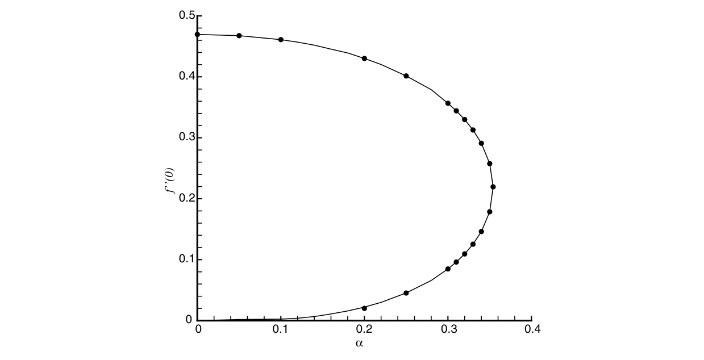
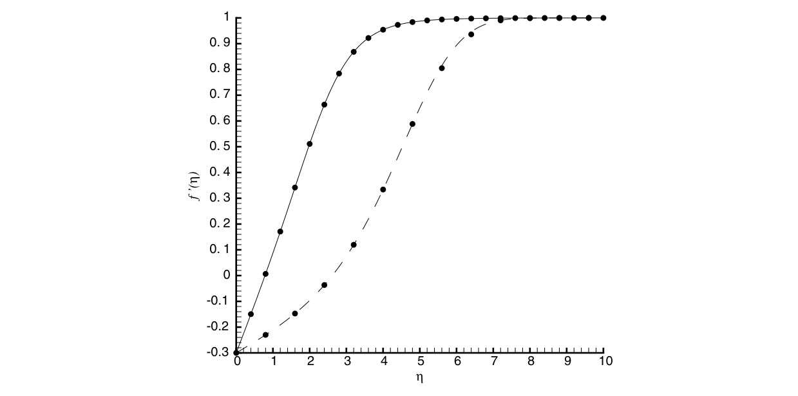
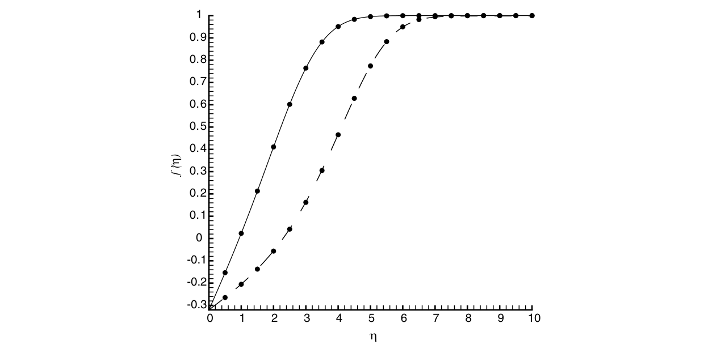

01中文摘要
应用同伦分析法（HAM）研究平板以恒定速度逆来流方向运动时的边界层流动。通过引入新的辅助函数 b(z)，得到双重解的级数表达式，并与数值结果吻合；由此获得解的分歧。结果表明，当壁面速度与来流速度之比 0<α<0.3541 时存在两个不同解，超过该临界值后无物理解。工作说明 HAM 是求解多解非线性问题的有效工具。
原始摘要（英文/原文）
The homotopy analysis method is applied to study the boundary layer flow over a flat plate which has a constant velocity opposite in direction to that of the uniform mainstream. The dual solutions in series expressions are obtained with the proposed technique, which agree well with numerical results. Note that, by introducing a new auxiliary function b(z), the bifurcation of the solutions is obtained. This indicates that the homtopy analysis method is a open system, in the framework of this technique, we have great freedom to choose the auxiliary parameters or functions. As a result, complicated nonlinear problems may be resolved in a simple way. The present work shows that the homotopy analysis method is an effective tool for solving nonlinear problems with multiple solutions.
02阅读说明
理论/解析类期刊论文（Communications in Nonlinear Science and Numerical Simulation, 2008, 13:350–358，共9页）。材料为带页码全文、5个图/表裁剪件；正文公式在文本层存在符号丢失（ε、δ、ħ、α等），已回读PDF第2–6页核对；图1–3和表1–2清晰可读。全文完整，无实验或数值求解细节，数值结果仅作为对比基准给出。提取口径：以Crocco变量下的常微分方程及同伦分析级数为主线。 文章类型：期刊
03一句话核心与三句话摘要
以同伦分析法结合辅助函数β(z)求得逆流运动平板边界层的两支级数解，并确定双解临界α≈0.3541。
- 问题与缺口：逆流运动平板边界层（α=Uw/U∞>0）在0<α≤0.3541内存在双解，但已有工作以数值/摄动为主，缺少统一的高阶解析表达。 AI概括
- 方法与发现：把方程化为Crocco变量形式，引入γ(z)=δs(z)+β(z)并构造同伦分析零阶/高阶形变方程，使一阶方程对δ0=f''(0)成为二次代数方程，从而由两个根生成上、下两支级数解，70阶结果与数值值吻合到约5位小数。 AI概括
- 结论与意义：α>0.3541时无解；辅助函数β(z)使同伦分析法可处理多解问题，作者据此主张该方法对多解非线性问题仍有效。 原文明确
04核心内容清单
| 要点 | 类型 | 重要性 | 原文依据 | 属性 |
|---|---|---|---|---|
| 研究对象是平板以恒定速度逆主流运动的二维定常不可压边界层，α=Uw/U∞>0。 | 问题定义 | A | p350–351，式(1)–(7) | 原文明确 |
| 用Crocco变量把动量方程化为γ(z)γ''(z)+z-α=0，边界条件γ'(0)=0、γ(1+α)=0。 | 方程变换 | A | p351，式(8)–(11) | 原文明确 |
| 关键构造γ(z)=δs(z)+β(z)，δ=f''(0)未知；β(z)提供额外自由度并满足β(0)=β'(0)=β(1+α)=0。 | 方法核心 | A | p352，式(12)–(13) | 原文明确 |
| 按解表达原则选取β(z)=-z²(z-1-α)、含ε的初值s0(z)与L=∂²/∂z²。 | 辅助函数选择 | B | p352，式(18)–(21) | 原文明确 |
| m=1时δ0满足二次方程(44)，其两个根(45)分别生成上支与下支解。 | 分岔机制 | A | p354–355，式(44)–(45) | AI概括 |
| 上支f''(0)随α增大而减小（0.30→0.35时0.35664→0.25759），下支随α增大而增大（0.08487→0.17899）。 | 定量结果 | A | p355，表1–2 | 原文明确 |
| 70阶同伦分析结果与数值结果在表1–2中吻合到约5位小数。 | 验证 | A | p355，表1–2；p356，图1 | 原文明确 |
| α>0.3541时不存在解；ε=-6时(45)的实根条件可延伸到α≤0.381501，但不代表存在解。 | 适用范围 | A | p356 | 原文明确 |
| 下支比上支需要更高阶近似，作者称与Merkin结论一致。 | 收敛性 | B | p356–357 | 原文明确 |
| 收敛控制：上支-4≤ħ<0，下支-30≤ħ<-5；必要时用同伦-Padé加速。 | 参数选择 | B | p355–357 | 原文明确 |
| ε由误差函数E(ε)最小化确定，得ε=-6（0<α<0.3541）。 | 初值优化 | B | p355，式(47) | 原文明确 |
| 由γ(u)=du/dη及其积分(49)可恢复f'(η)，图2–3验证上下支剖面。 | 结果还原 | B | p357，式(48)–(49)，图2–3 | 原文明确 |
05引言：研究问题与领域缺口
研究对象为均匀主流流过的平板，平板以恒定速度Uw沿与主流相反方向运动，α=Uw/U∞（p351）。控制方程为二维定常不可压边界层连续方程与动量方程(1)–(2)，边界条件(3)–(4)为壁面u=Uw、v=0，远场u=U∞（p350）。作者回顾：Weyl[3]证明α=0时解存在且唯一；Merkin[4]对0<α≤0.354给出双解并讨论稳定性；Riley & Weidman[5]给出α<0.3541的数值解；Hussaini等[6]证明解仅当α不超过某临界值时才存在且非唯一（p351）。缺口在于缺少能同时给出两支解的高阶解析方法。作者采用Crocco变量（以切应力γ=f''(η)为因变量、切向速度u=f'(η)为自变量），将方程化为(8)–(9)，再平移为(10)–(11)，目标是借助同伦分析法[11]获得双解的级数表达式（p351–352）。
06流动条件与几何构型
| 项目 | 数值/描述 | 依据 | 备注 |
|---|---|---|---|
| 流动类型 | 二维、定常、不可压缩层流平板边界层 | p350–351，式(1)–(7) | 无压缩性、无热传导项 |
| 平板运动方向与速度 | Uw>0，方向与主流相反；α=Uw/U∞ | p351，式(7)下方说明 | α>0对应该运动方向 |
| 壁面边界条件 | f(0)=0，f'(0)=-α；远场f'(∞)=1 | p351，式(7) | |
| 双解存在范围 | 0<α≤0.3541 | p351；p356 | α>0.3541时文中称无解 |
| 表1–2计算工况 | α=0.30, 0.31, 0.32, 0.33, 0.34, 0.35 | p355，表1–2 | 上支与下支分别列出 |
| 剖面图工况1 | α=0.3 | p356，图2 | |
| 剖面图工况2 | α=0.32 | p357，图3 | |
| 来流Mach数 | 文中未提及 | 全文 | 相似解不显含Mach数 |
| Reynolds数及参考长度 | 文中未提及 | 全文 | 相似变换使用局部Reynolds数组合，但未给具体数值 |
| ε取值 | ε=-6 | p355 | 适用于0<α<0.3541 |
| ħ取值 | 上支-4≤ħ<0；下支-30≤ħ<-5 | p355 | 由ħ曲线确定 |
| 截断阶数 | 50阶、60阶、70阶；Padé [40,40]、[50,50] | p355，表1–2 | 逐工况列出 |
07核心现象与关键参数
| 参数 | 定义 | 数值 | 关系/说明 | 依据 |
|---|---|---|---|---|
| α | 平板表面速度与自由来流速度之比，α=Uw/U∞ | 0.30–0.35（表1–2）；临界约0.3541 | 双解存在范围0<α≤0.3541 | p351；p355–356 |
| δ | δ=γ(0)=f''(0)，壁面切应力相关量 | 上支0.35664（α=0.30）至0.25759（α=0.35）；下支0.08487至0.17899 | 由式(45)的两个δ0分支逐阶确定 | p352；p355，表1–2 |
| ε | 初值s0(z)中的待定参数，用于优化初始近似 | -6 | 使误差函数E(ε)(47)最小 | p352，式(19)；p355，式(47) |
| ħ | 同伦分析的非零辅助参数，控制级数收敛 | 上支-4≤ħ<0；下支-30≤ħ<-5 | 由f''(0)–ħ曲线选取 | p355 |
| f''(0)上支（α=0.30） | 上支壁面曲率/切应力参数 | 70阶0.35660；数值0.35664 | 表1对比 | p355，表1 |
| f''(0)下支（α=0.30） | 下支壁面曲率/切应力参数 | 70阶0.08489；数值0.08487 | 表2对比 | p355，表2 |
| f''(0)上支（α=0.35） | 上支壁面曲率/切应力参数 | 70阶0.25758；数值0.25759 | 表1对比 | p355，表1 |
| f''(0)下支（α=0.35） | 下支壁面曲率/切应力参数 | 70阶0.17899；数值0.17899 | 表2对比 | p355，表2 |
| α_real | ε=-6时式(45)给出实数δ0的上限 | 0.381501 | 仅实数条件，不等于存在解；实际无解阈值为0.3541 | p356 |
08方法与数据
方法链为：Blasius相似变换(5)得f'''+ff''=0及边界条件(7)（p351）；Crocco变换得γ(u)γ''(u)+u=0、γ'(-α)=0、γ(1)=0（(8)–(9)，p351）；令z=u+α得γ(z)γ''(z)+z-α=0、γ'(0)=0、γ(1+α)=0（(10)–(11)，p351）。随后取γ(z)=δs(z)+β(z)，δ=γ(0)=f''(0)为未知常数，β(z)为待定函数并满足(13)（p352）。按解表达原则选基函数{z^m}、β(z)=-z²(z-1-α)、初值s0(z)（含参数ε）、辅助线性算子L=∂²/∂z²，并定义非线性算子N（(16)–(22)，p352）。构造零阶形变方程(23)–(24)，将φ与Λ(q)按q展开（(27)–(31)），再对q求m阶导数得高阶形变方程(34)–(38)；每阶由边界条件(35)确定积分常数，并由s'_m(0)=0（(40)）确定δ_{m-1}（p353–354）。ε由误差函数E(ε)（(47)）取极小确定，得ε=-6（0<α<0.3541，p355）；收敛控制参数ħ由ħ曲线选取，上支-4≤ħ<0、下支-30≤ħ<-5（p355）。必要时用同伦-Padé技术[m,m]加速收敛（p356–357）。数值结果作为独立校验，但文中未说明数值方法、网格或精度（p355表1–2）。
| 项目 | 内容 | 依据 | 备注 |
|---|---|---|---|
| 相似变换 | f(η)=ψ/(2νxU∞)^(1/2)，η=y(U∞/(2νx))^(1/2) | p351，式(5) | 化为f'''+ff''=0 |
| Crocco变量变换 | γ(u)=f''(η)，u=f'(η)，得γ(u)γ''(u)+u=0 | p351，式(8)–(9) | |
| 坐标平移 | z=u+α，区间-α<u<1映射为0<z<1+α | p351，式(10)–(11) | |
| 解的分解 | γ(z)=δs(z)+β(z)，δ=f''(0) | p352，式(12)–(13) | |
| 辅助函数 | β(z)=-z²(z-1-α) | p352，式(18) | 引入分岔的关键 |
| 初始近似 | s0(z)=1-z²/(1+α)²+ε[z³/(1+α)³-z²/(1+α)²] | p352，式(19) | |
| 辅助线性算子 | L=∂²/∂z²，L[C1+C2z]=0 | p352，式(20)–(21) | |
| 零阶形变方程 | (1-q)L[φ(z;q)-s0(z)]=qħN[φ(z;q),Λ(q)] | p353，式(23) | q∈[0,1] |
| 高阶形变方程 | L[s_m-χ_m s_{m-1}]=ħR_m，R_m见式(36) | p353–354，式(34)–(38) | |
| 未知参数确定 | 由s'_m(0)=0确定δ_{m-1} | p354，式(40) | |
| 初值参数优化 | 误差函数E(ε)=∫[0,1]{[δs0+β][δs0''+β'']+z-α}²dz，取极小得ε=-6 | p355，式(47) | |
| 收敛加速 | 同伦-Padé [m,m]近似，表1–2列出[40,40]、[50,50] | p355–357 | |
| 数值验证 | 表1–2、图1–3与数值结果对比 | p355–357 | 数值方法、网格与精度文中未提及 |
09核心推导与公式
先用Blasius相似变换把边界层方程化为f'''+ff''=0，再用Crocco变换把切应力γ=f''(η)作为未知函数、切向速度作为自变量，得到二阶非线性方程(10)。关键是把γ分解为δs(z)+β(z)，其中δ=f''(0)未知、β(z)可自由选取；由此构造同伦分析形变方程。m=1时，确定δ0的方程退化为二次代数方程(44)，两个根对应上、下两支解，从结构上实现了分岔。
关键假设
- 二维、定常、不可压缩层流边界层，流体物性为常数（p350–351）
- 存在Blasius型相似解，压力梯度为零（由式(1)–(2)及变换(5)体现，p351）
- 平板运动方向与主流相反，α=Uw/U∞>0（p351）
- γ(z)可表示为δs(z)+β(z)，且β(z)满足齐次边界条件(13)（p352）
- 解可按基函数{z^m}展开，s(z)在0≤z≤1+α内足够光滑（p352，式(16)–(17)）
- 级数(27)–(28)在q=1收敛，可通过选取ħ保证（p353）
推导过程
由二维定常不可压边界层方程(1)–(2)及壁面/远场条件(3)–(4)，采用Blasius变换(5)，得到三阶非线性常微分方程(6)及边界条件(7)。这一步把偏微分方程化为仅依赖η的相似方程，α只出现在壁面条件中。
取切应力γ(u)=f''(η)为因变量、切向速度u=f'(η)为自变量，利用γ=du/dη把方程(6)改写为(8)，边界条件为(9)。再令z=u+α，把区间-α<u<1平移为0<z<1+α，得到(10)–(11)。这一步消去η，使方程只含γ(z)与z。
令γ(z)=δs(z)+β(z)，δ=γ(0)=f''(0)为未知常数，β(z)为待定函数并满足(13)。代入(10)得(14)，同时s(z)满足(15)。此时δ同时出现在微分方程和边界条件中，为后续把δ当作形变参数Λ(q)做准备。
按解表达原则(17)与边界条件(13)选取β(z)=-z²(z-1-α)；按(15)选取含ε的初值s0(z)；取L=∂²/∂z²，其零空间为C1+C2z。ε用于优化初始近似，后续由(47)确定。
定义非线性算子N（(22)），其中Λ(q)是δ的映射、φ(z;q)是s(z)的映射。构造零阶形变方程(23)及边界条件(24)。q=0时φ=s0、Λ=δ0；q=1时φ=s、Λ=δ。若展开级数在q=1收敛，则s与δ由(30)–(31)给出。
将(23)对q求m次导数并令q=0、除以m!，得(34)；边界条件为(35)。右端项R_m由(36)给出，其中Γ_n与Ω_n分别为δ_i s_i与δ_i s_i''的卷积和，χ_m在m=1时为0、m>1时为1。
m=1时χ1=0，R_1含δ0²项；由s'_1(0)=0消去积分常数后，δ0满足二次代数方程(44)。其判别式决定实根数目，两个根由(45)显式给出；这两个根分别作为上支与下支的起点。
对m≥2，式(40)成为δ_{m-1}的线性代数方程，可依次解出；s_m由(39)的通解加特解并用(35)前两个条件定常数。最终得到s(z)与δ的M阶近似(41)–(42)，以及γ(z)的M阶表达式(43)。
由γ(u)=du/dη，积分得η=∫_{-α}^{u}du/γ(u)，从而把求得的γ(z)转成f'(η)剖面，用于图2–3的对比。
适用边界：推导仅针对二维定常不可压相似边界层，不含压缩性、热效应、压力梯度或三维效应；未证明级数收敛的充分条件，收敛依赖ħ的选取；未分析双解的稳定性与物理可实现性；式(46)（ε的复数条件）在文本层符号缺失，虽回读PDF第355页，分母等处符号仍难以完全确认，引用前需以PDF原图复核；式(45)的±分支与分母符号在排版上较密，本文按PDF第355页原式转录。
10结果：主要发现与关键证据
当m=1时，由(40)得到关于δ0的非线性代数方程(44)，它有两个根，即(45)的两个分支；取不同δ0后逐阶求解线性方程即可得到上、下两支解（p354–355）。表1给出上支f''(0)：α=0.30时70阶为0.35660、数值为0.35664；α=0.35时70阶为0.25758、数值为0.25759（p355）。表2给出下支：α=0.30时70阶为0.08489、数值为0.08487；α=0.35时70阶为0.17899、数值为0.17899（p355）。随α由0.30增至0.35，上支f''(0)由0.35664降至0.25759，下支由0.08487升至0.17899（表1–2，p355；图1，p356）。ε=-6时(45)在α≤0.381501给出实数δ0，但α>0.3541时不存在解（p356）。图1以圆圈（70阶）与实线（数值）对比f''(0)–α，二者重合（p356）；图2（α=0.3）与图3（α=0.32）给出f'(η)：上、下支均从f'(0)=-α出发并趋于1，但近壁形状不同，70阶结果与数值上/下支曲线一致（p356–357）。作者指出下支比上支需要更高阶近似，与Merkin结论一致（p356–357）。
| 发现 | 证据 | 证据类型 | 强度 | 位置 | 属性 |
|---|---|---|---|---|---|
| 通过引入辅助函数β(z)，同伦分析法得到逆流运动平板边界层的两支级数解。 | 摘要称“by introducing a new auxiliary function β(z), the bifurcation of the solutions is obtained”；结论再次强调该构造为方法创新（p350，p357）。 | 核心主张 | 强 | p350摘要；p357结论 | 原文明确 |
| m=1时δ0满足二次方程(44)，其两个根(45)分别生成上支与下支解。 | 式(44)–(45)及“which has two different solutions”的表述（p354–355）。 | 解析推导 | 强 | p354–355，式(44)–(45) | AI概括 |
| 70阶同伦分析结果与数值结果高度一致：上支α=0.30时0.35660对0.35664，α=0.35时0.25758对0.25759。 | 表1逐行对比（p355）。 | 定量验证 | 强 | p355，表1 | 原文明确 |
| 下支同样与数值一致：α=0.30时0.08489对0.08487，α=0.35时0.17899对0.17899。 | 表2逐行对比（p355）。 | 定量验证 | 强 | p355，表2 | 原文明确 |
| 随α由0.30增至0.35，上支f''(0)单调减小、下支单调增大，两支在临界α附近相互靠近。 | 表1–2数值：上支0.35664→0.25759，下支0.08487→0.17899；图1给出f''(0)–α曲线（p355–356）。 | 趋势 | 中 | p355，表1–2；p356，图1 | AI概括 |
| α>0.3541时不存在解，尽管理论上(45)在α≤0.381501仍给实数δ0。 | 原文“it is found that no solution exists when α > 0.3541”（p356）。 | 适用边界 | 强 | p356 | 原文明确 |
| 下支级数比上支更难收敛，需要更高阶近似。 | 原文“higher-order approximations are necessary for the lower branch of solutions than the upper ones”，并称与Merkin[4]一致（p356–357）。 | 收敛性 | 中 | p356–357 | 原文明确 |
| 图2–3显示上、下支速度剖面均满足f'(0)=-α、f'(∞)=1，但近壁形状不同，70阶结果与数值曲线重合。 | 图2（α=0.3）与图3（α=0.32）中圆圈、实线、虚线对比（p356–357）。 | 图形证据 | 中 | p356–357，图2–3 | AI概括 |
11机制解释与论证链
论证链可概括为：前提——Crocco变量把原问题化为γ(z)γ''+z-α=0，且δ=f''(0)未知（p351）。构造——令γ=δs+β，把δ提升为同伦参数Λ(q)，β(z)满足齐次边界条件但不参与确定δ（p352）。证据——m=1时R_1含δ0²，由边界条件s'_1(0)=0得到δ0的二次方程(44)，判别式非负时有两个实根(45)（p354–355）。推论——每个δ0根对应一条独立的逐阶递推链，因此得到两支级数解；这就是作者所称“by introducing a new auxiliary function β(z), the bifurcation of the solutions is obtained”（p350）。验证——70阶级数与数值f''(0)、f'(η)吻合（表1–2，图1–3，p355–357）。边界——α>0.3541时无解（p356），说明二分岔在临界α处终止；但本文未分析两支解的稳定性，因此不能由“存在双解”推断哪一支在物理上可实现（AI推断）。
12讨论：结论、贡献与局限
机制上，作者把双解的来源归因于辅助函数β(z)的引入：β(z)增加了自由度，使一阶形变方程对δ0出现二次代数方程，从而产生两个分支；文章称“by introducing a new auxiliary function β(z), the bifurcation of the solutions is obtained”（p350摘要；p357结论）。这被作者视为同伦分析法“开放系统”的体现——辅助参数/函数可自由选择，因而可把复杂非线性问题化为简单形式（p350）。收敛性由ħ控制：不同分支的收敛区间不同（上支-4≤ħ<0，下支-30≤ħ<-5，p355），说明下支级数更难收敛；同伦-Padé用于必要时的加速（p356–357）。局限包括：未讨论两支解的稳定性或物理可实现性（Merkin曾讨论稳定性，但本文未做，p351）；未给出数值方法细节；仅处理二维定常不可压相似解；未讨论ε、β(z)选择对收敛域和分支结构的系统影响；结论主要建立在α≤0.35的表格与图形对比上。
作者结论
作者结论：用同伦分析法成功获得了逆流运动平板边界层的双解级数表达式，数值结果验证了其有效性；引入辅助函数β(z)实现了了解的分岔，这是对同伦分析法的一种创新；该方法不依赖小/大参数，对多解非线性问题仍然有效，并有望推广到其他多解问题（p357）。作者还提到该解析方法可应用于纤维绝热材料中湿分迁移、谷物储藏及水饱和土壤污染物扩散等工程问题（p357）。
主要贡献
- 给出逆流运动平板边界层双解的高阶同伦分析级数表达式，而此前多为数值或摄动结果（p351，p357）。
- 提出用辅助函数β(z)把δ=f''(0)转化为形变参数，使一阶形变方程对δ0成为二次方程，从解析结构上获得分岔（p350，p354–355）。
- 系统给出上、下支的收敛控制区间（ħ）、初值优化参数（ε=-6）及同伦-Padé加速方案（p355–357）。
- 用表1–2和图1–3对两支解做数值校验，覆盖α=0.30–0.35（p355–357）。
局限与未解决问题
作者承认/材料显示的局限：未讨论双解的稳定性（Merkin曾讨论，但本文未做，p351）；未说明所用数值方法、网格和精度（p355）；仅处理二维定常不可压相似流动，未涉及压缩性、热传导、压力梯度、三维效应或非定常性；结论主要建立在α≤0.35的对比上，临界α附近的行为未细化。AI识别：β(z)与ε的选取对收敛域和分支结构的影响未系统研究；式(45)的符号排版密集，式(46)文本层缺失符号，引用时需回原文核对；文章未说明哪支解在物理上可实现（AI推断）。
13对高速流动与工程的意义
对高速流动/工程的意义：本文提供的是不可压层流相似边界层的解析多解范例，可用于检验数值方法捕捉分岔解的能力，也可作为同伦分析法处理多解问题的模板（p357）。它不能直接回答SBLI中的激波/边界层干扰、分离泡非定常或壁面热流问题——文中没有激波、可压缩性或湍流（AI推断）。可借鉴之处在于：用辅助函数/辅助参数扩大解空间以获得多支解，以及用误差函数优化初值、用ħ曲线控制收敛，这些思路可迁移到其他非线性边值问题（AI概括）。对运动壁面边界层（如移动带、运动表面）的解析建模有直接参考价值（AI推断）。
14核心图件



15可引用原文素材
| 原文短句 | 可支持的观点 | 位置 | 使用建议 |
|---|---|---|---|
| “bifurcation of the solutions is obtained” | β(z)是获得双解分岔的关键构造 | p350，摘要 | 引用以说明方法的创新点 |
| “no solution exists when α > 0.3541” | 双解存在的临界参数 | p356 | 引用临界α值时必须同时给上下文 |
| “higher-order approximations are necessary” | 下支比上支更难收敛 | p356–357 | 讨论级数收敛性 |
| “ε = -6 for 0 < α < 0.3541” | 初值优化参数的取值 | p355 | 复现计算时使用 |
| “−4 ≤ ħ < 0 for the upper branch” | 上支的收敛区间 | p355 | 复现计算时使用 |
| “−30 ≤ ħ < −5 for the lower ones” | 下支的收敛区间 | p355 | 复现计算时使用 |
| “still valid for nonlinear problems with multiple solutions” | 作者对方法适用性的主张 | p357，结论 | 评价方法推广价值 |
16最终核验
| 核验项 | 结论 |
|---|---|
| 仅基于全文 | 是。全部内容来自bundle正文、表1–2与图1–3；ε、δ、ħ、α等符号在文本层丢失，已回读PDF第2–6页核对，未引入外部文献结论。 |
| A 级要点有依据 | 是。A级要点均有页码与式号/表号/图号支撑：式(10)–(13)、式(44)–(45)、表1–2、图1及p356的临界α陈述。 |
| 属性标注 | 是。three_sentence、core_points、findings均标注【原文明确】【AI概括】【AI推断】；quotes为原文短句，未标attr。 |
| 覆盖范围 | 覆盖IMRaD四节、研究缺口、方法链、核心推导、定量结果、机制、局限与意义；推导步骤含标题、说明、LaTeX与原文位置。 |
| 无编造 | 未编造页码、图号、公式或数据；表1–2数值逐项取自bundle；式(46)符号不清处已注明需回原文核对，未擅自补全。 |
需回原文确认
- 上支与下支解中哪一支在物理上可实现？本文未做稳定性分析。
- 辅助函数β(z)与初值参数ε的选择如何影响收敛域、分支数目与临界α？
- 文中数值结果由何种方法得到（网格、精度、边界处理）？文中未提及。
- α趋近0.3541时两支解如何合并？临界点附近级数是否仍收敛？
- 式(45)的±分支与式(46)的符号体系能否由PDF原图进一步确认？
- 该构造能否推广到可压缩、三维或非定常边界层？文中未讨论。
17关联文献
依据标签、板块、构型与作者脉络自动关联，可据此追踪同一问题的前序与后续工作。
18引用格式
选择期刊风格后复制；出处保留原刊名。BibTeX 可直接用于 LaTeX。
引用格式
Xu, H. & Liao, S. J. 2008 Dual solutions of boundary layer flow over an upstream moving plate. Communications in Nonlinear Science and Numerical Simulation 13 (2), 350–358. https://doi.org/10.1016/j.cnsns.2006.04.008
PDF上传 PDF 并更新本页
本页缺少全文、摘要或图件时，可在浏览器本地补入 PDF。解析完全在本机完成，不上传网络；完成后会更新本页的 PDF 打开链接、原摘要、IMRaD 机器抽取、关键句与含图页面。复杂的公式语义与中文深度解读仍以原文和既有精读记录为准。
Zotero 笔记摘录
研究了逆向运动的平板引起的边界层流动。当壁面速度与来流速度之比超出某个临界值时，边界层方程不存在物理解，当0<α<0.3541（本文给的）时，存在两个不同的解（双重解），超出该值后就会无解。